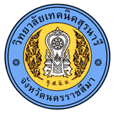

SRNR NEXT
ยังเชื่อมต่อระบบไม่ได้
เปิด Wi-Fi หรืออินเทอร์เน็ตมือถือ แล้วลองอีกครั้ง เพื่อโหลดโปรแกรมและใช้งานข้อมูลล่าสุด

ยังเชื่อมต่อระบบไม่ได้
เปิด Wi-Fi หรืออินเทอร์เน็ตมือถือ แล้วลองอีกครั้ง เพื่อโหลดโปรแกรมและใช้งานข้อมูลล่าสุด